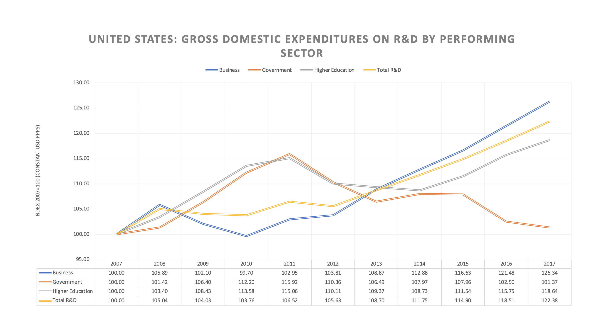

PART SIX | A Visualization of China's Use of Soft Power Around the World
China's use of soft power poses a threat to United States foreign policy interests around the world. In 2018 the U.S. Intelligence Community identified China as a potential threat to the United States in their Worldwide Threat Assessment.
Economic Influence: "China, for example, has acquired proprietary technology and early-stage ideas through cyber-enabled means" (Director of National Intelligence, 2018, p. 12).
China has “acquired [the] proprietary technology and early-stage ideas through cyber-enabled means” such as cyber espionage, cyber attacks, counterintelligence and foreign denial and deception (Director of National Intelligence, 2018, pg. 12). Technology acquisitions and strategic economic competition is an analysis of two research papers published by the Center for Strategic and International Studies: Emerging Technologies and Managing the Risk of Tech Transfer to China and Research Collaboration in an Era of Strategic Competition. Each paper had a unique perspective to analyzing this subject. Research Collaboration in an Era of Strategic Economic Competition compared gross domestic expenditure on research and development between the United States and China, examined the number of stem graduates in the United States and China, and identified seven areas of sensitive research in information technology and innovation. Emerging Technologies and Managing the Risk of Tech Transfer to China approached the subject by analyzing foreign investment restraints between allies and partners, export controls for emerging technology, and counterespionage in cybersecurity.
President Xi Jinping called “innovation the primary driving force behind development” and “the strategic underpinning for building a modernized economy” (Segal and Gerstel, 1). To demonstrate China’s ambition to invest in innovation, otherwise known as research and development (R&D) we simplify R&D into the following categories: business, government, and higher education. From the Organization for Economic Cooperation and Development (OECD) we compared data on Chinese and United States research and development expenditure. China has steadily increased R&D spending to compete with the United States. Besides “boosting efforts to train researchers at home and abroad in STEM fields” (Segal and Gerstel, 5), there are a greater number of Chinese STEM graduates in the United States obtaining their undergraduate and PhD degrees. Of the destinations for Chinese students studying abroad, 36% study in the United States, followed by 15% in Australia, and 10% studying in the United Kingdom.
Gross domestic expenditure on R&D by performing sector greatly differed between the United States and China. In the past ten years, China has exponentially increased spending in all categories of R&D from 100 PPP USD in 2007 to almost 350 PPP USD — with significant investment in business and higher education. In the United States, investment in business and higher education have also increased but not steadily. Investment in government R&D has significantly decreased from 115.92 PPP USD to 101.37 PPP USD. Overall, China invests nearly double into research and development than the United States.
The United States dominates in all of the following areas of R&D but China quickly aims to become the global leader as the subsequent facts state. China’s investment in research and development spans all domains and is vital to President Xi Jinping agenda.
UNITED STATES SENSTIVE RESEARCH AREAS according to Research Collaboration in an Era of Strategic Competition